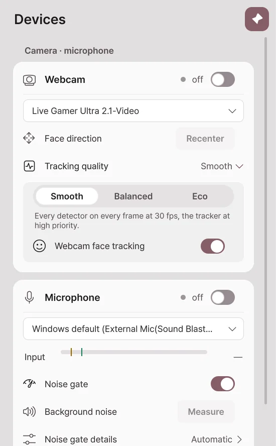
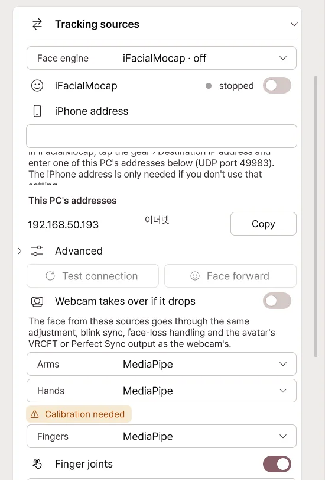
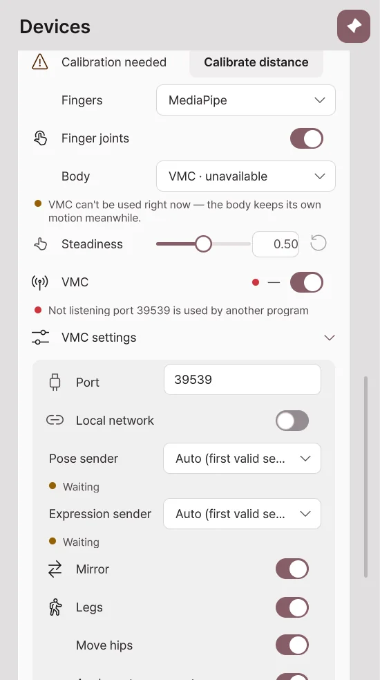
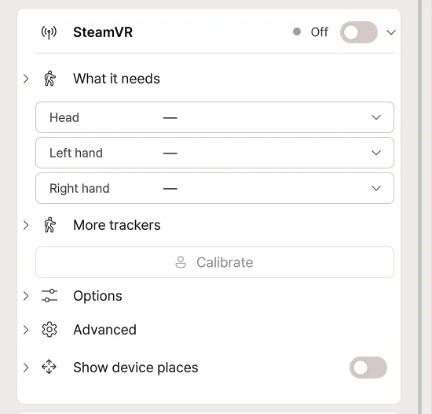

Devices
Connect your webcam, microphone, and trackers, and choose the input to use for your face, body, and hands.
Webcam and Microphone

| Button/Item | Function |
|---|---|
| Webcam Switch | Start or stop tracking with the selected camera. |
| Camera List | Choose the webcam to use. |
| Frontal Calibration | Align the direction you are currently facing with the front of the avatar. |
| Tracking Quality | 'Smooth' calculates movements more frequently. 'Balanced' and 'Economy' reduce the load on the PC. |
| Microphone Switch | Start or stop mouth movement tracking with the selected microphone. |
| Input Bar | Shows the volume of incoming voice. Check if it moves when you speak. |
| Noise Gate | Prevents the mouth from opening for small sounds. |
| Measure Background Noise | Measures sound when you are not speaking to set the noise threshold. |
Raising the noise gate threshold makes it less sensitive to keyboard sounds but may ignore small voices. If the mouth does not move well, try lowering the threshold.
Tracking Sources

Choose what to use to move each of the face, mouth, head, eyes, arms, hands, fingers, and body.
| Option | When to Use |
|---|---|
| Webcam | Follows the movements of my face, body, and hands as seen by the camera. |
| iPhone | Moves expressions and head using the iPhone face app. |
| VMC | Receives movements from other motion capture apps or tracker apps. |
| Ultraleap | Moves the hands using a dedicated hand tracker. |
| SteamVR | Connects the HMD, controllers, and trackers to body parts. |
| Off | Does not use tracking input for that body part. |
Example: You can set the face to iPhone and arms and hands to webcam. Even if a device is connected, the body part will not move if its source points to a different input.
Full Body and Fingers with Webcam
- Full body: Tracks the torso and legs visible in the camera. Legs hidden by a desk are not tracked as if they were visible.
- Finger joint tracking: Follows the bending and spreading of finger joints.
- Hand tremor correction: Increasing this reduces minor tremors, but fast movements will follow slightly delayed.
iPhone Connection

- Connect the iPhone and PC to the same Wi-Fi.
- Choose iFacialMocap or FaceMotion3D in the face engine.
- Copy this PC's address and enter it into the target address of the phone app.
- Turn on the input switch and look straight ahead for a moment. Calibration will start about 3 seconds after the first facial input.
- Check whether data is coming in during the connection test.
| Item | When turned on or changed |
|---|---|
| Mirror | Reflects left and right movement like a mirror. |
| Switch to webcam if disconnected | Switch to the webcam while the phone connection is disconnected. |
| iPhone Address | Used in a method where the PC address is not entered in the mobile app. In a normal connection, it can be left empty. |
VMC Connection

- Turn on VMC transmission in the sending app and send it to this PC's receiving address and port.
- Select the area to be received from the tracking source using the VMC.
- Check whether the number of units received in the VMC settings and the input status are displayed.
- If your body direction or arms are misaligned, adjust them to a T position or alignment.
VMC tracking tested with: ReboCap, HTC VIVE Tracker, and Tundra Tracker.
SteamVR Connection

- Check if the HMD, controllers, and trackers are recognized in SteamVR.
- Device → Turn on SteamVR.
- Connect the device to the corresponding part such as the head, hand, or body.
- Run the calibration to align the avatar with the position of my device.
If the device is connected normally but the movement is unusual, check the smoothness, calibration, and tracking return settings in Operation.